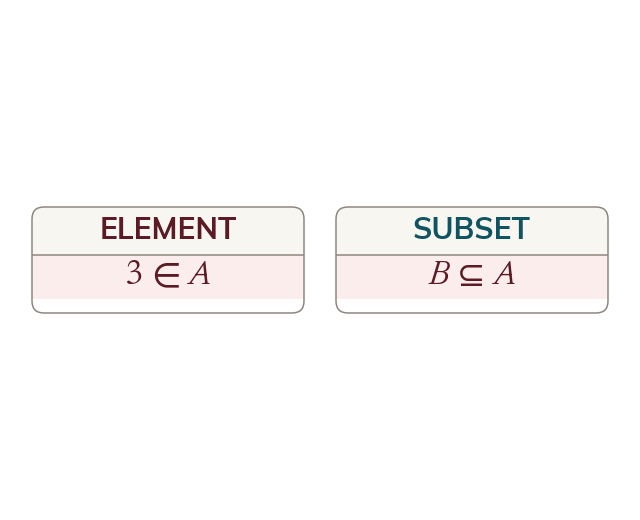

Element of a set, or subset of it
An element belongs to a set: ∈ A set sits inside a set: ⊆ Check whether the left side is one element or a set.
A set is a collection of distinct elements, named with a capital letter and written inside curly brackets. Two different relationships can hold, and they are not interchangeable. An element belongs to a set: ∈ A says the single thing is one of A's members. A set sits inside another set: ⊆ A says every member of is also a member of A. The left-hand side is a single element in the first and a whole set in the second, which is the test for which symbol is wanted.